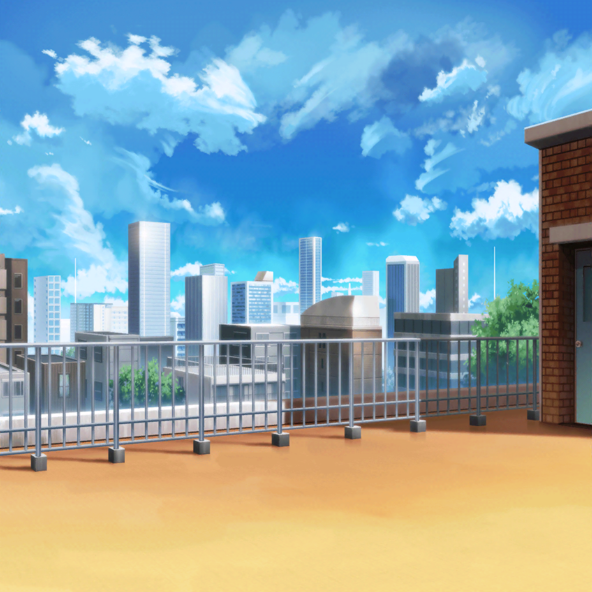

モカ
いい天気だね～。
こんな気持ちいい日に、
教室に閉じこもってるのはもったいな～い
蘭
まあ……そうだね。
あの密閉された空間にいるのはお断りかな
モカ
今日はここで自由授業～。
なんちゃって～
蘭
……入り口から足音？
裏に隠れよう
モカ
！ 誰か来る……！
モカ
うわっと！
モカ
ちょ、ちょっと蘭っ。
腕引っ張らないでよ～……!
蘭
ふぅ……行ったかな
モカ
行ったみたいだね～
モカ
ふふ、なんか懐かしかったね～？
昔もこんな風に、よく一緒に隠れてたもんだよ、
うんうん
蘭
そうだっけ？
モカ
もう、蘭ってばー。
あったよ、こういうこと
モカ
……っていうかさ、
蘭はわざわざここにきてサボってるのに、
人がきたら隠れるって……なんか変じゃない？
蘭
１人になりたくてここに来てるんだから仕方ないでしょ。
別に怒られたくないわけじゃないし
モカ
ふぅん、１人になりたくて、か～……
蘭
教室は……あまり好きじゃない。
雑音が耳に入るし
蘭
その点、ここはいい。
邪魔な音が何もないから
モカ
ん～？
ってことはー……
あたし、蘭の邪魔しちゃった～？
蘭
何、邪魔って。
別に何もされてないけど
モカ
だって蘭は１人になりたかったんでしょ？
でも、あたしが来ちゃったわけだから……
モカ
お邪魔なら教室戻ろうか？
蘭
……別に、いてくれていいけど。
特別だし
モカ
特別……？
モカ
……ねえ、蘭？
今、あたしのこと……特別って言った？？
蘭
……っ。
そ、そんなこと言ってない
モカ
え～、言ったよね？
モカ
『……別に、いてくれていいけど。
特別だし』って～
モカ
どうしちゃったの？
いきなりそんなこと言い出して
モカ
蘭、大丈夫～？
蘭
だ、大丈夫って、どういう意味だし。
それに特別って……そういう意味じゃないしっ
モカ
じゃあ、どういう意味なのかね？
モカちゃん先生に、説明したまえ～
蘭
この場所が特別って意味で……
その、モカが特別っていう意味じゃ……
蘭
モカと２人でサボれて嬉しいとか、
別にそんなこと思ってないから
蘭
その……
変に誤解しないでよっ
モカ
ん～？
どういう意味か、もっと説明プリーズ
蘭
だ、だから……
特別な場所にモカと一緒にいられることとか、
別にそんな嬉しいことでもないし
蘭
ほんとは、１人でここにいるの寂しかったとか、
そういうのでもないってことっ
モカ
蘭……寂しかったの？
蘭
だ、だから違……
モカ
言ってくれれば、いつだってここに来るのに～。
あ。雨の日はお断りだけど
蘭
……雨の日は、あたしも来ないけど
モカ
じゃあ、それ以外のときは
ここで一緒にサボろうか？
蘭
は？
だから、さっきの話聞いてた？
蘭
特別っていうのは、本当にこの場所のことで
その、モカのことは……
モカ
はいはい、わかったよ～。
もう、慌てちゃってかわいいんだから～
蘭
慌ててないしっ。
あと、勝手な解釈しないでよっ
モカ
は～い。
じゃあ蘭の言葉のアヤってことにしておこ～
モカ
ふっふっふ～♪
蘭
……な、なにニヤニヤしてるわけ？
モカ
ん～？ 別に～
モカ
ただ、今日はここに来てよかったなと思ってさ～
モカ
なんか気分いいから、このままお昼寝しよ～っと。
お昼になったら起こしてね～
モカ
それじゃあ蘭、おやすみ～……